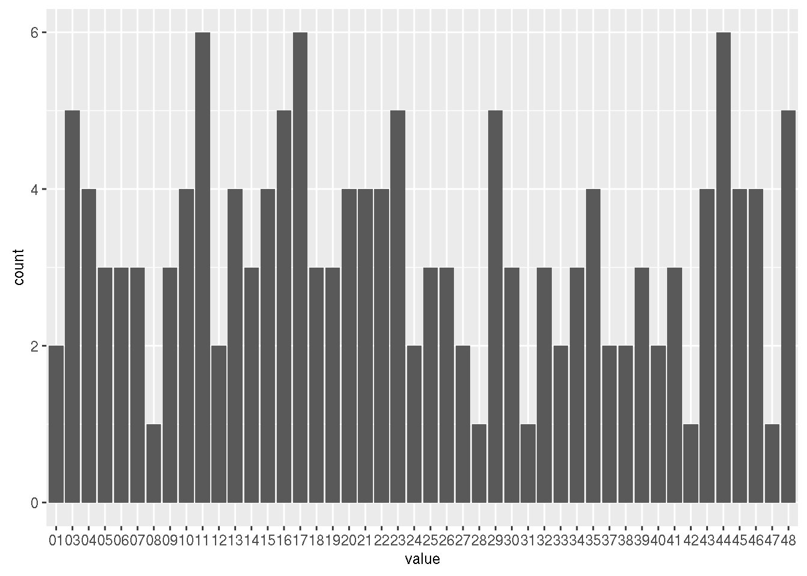
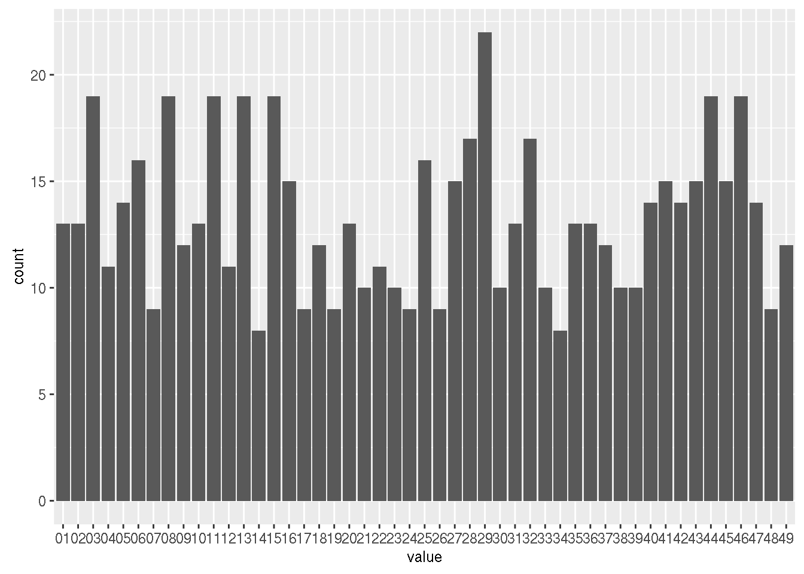
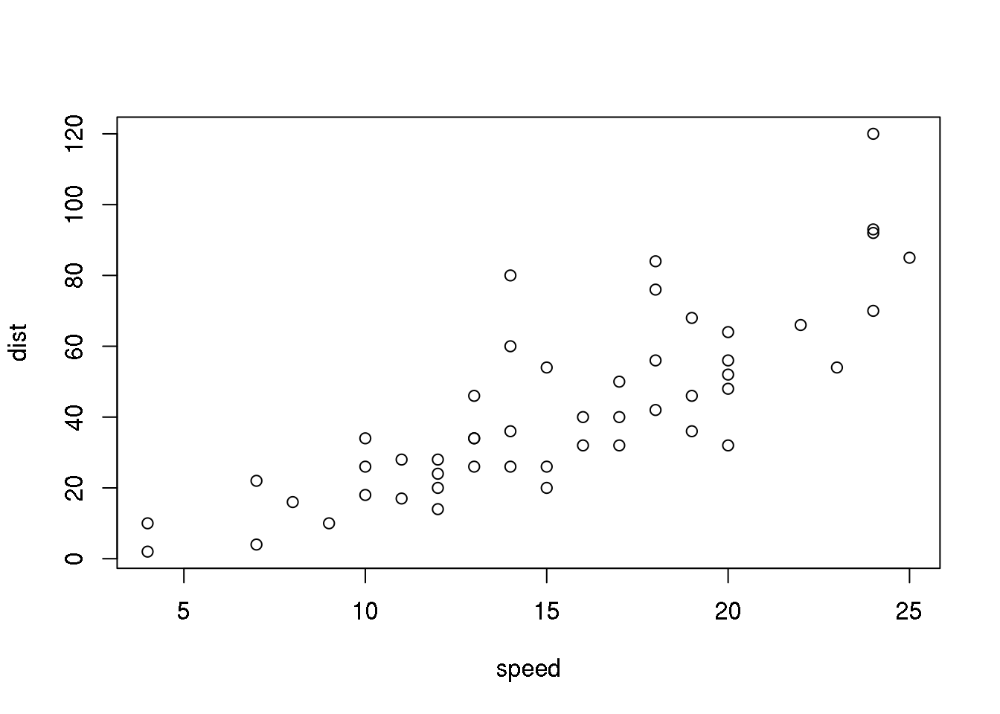
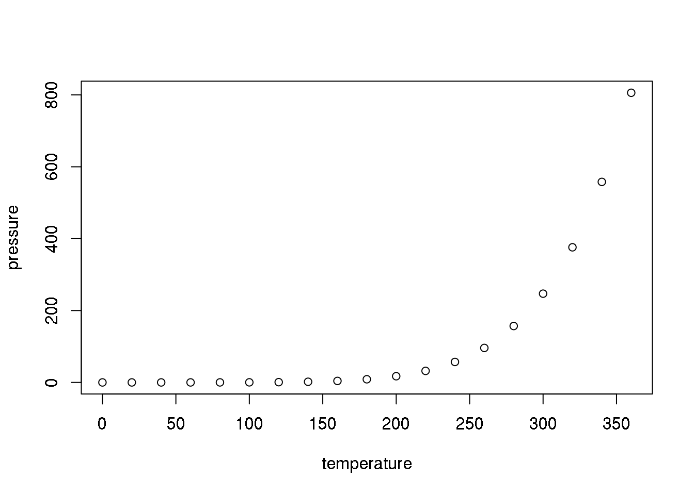

1 Mini example to overview ETL + Viz
Fist Thing check your environment
library(datasets);library(dplyr);library(ggplot2);library(devtools);library(reshape2)
getwd()## [1] "/home/gg/works/MSPartnerPratice/ms-partner-training-20160308/part2"setwd("~/works/MSPartnerPratice/ms-partner-training-20160308")
getwd()
load("~/works/MSPartnerPratice/ms-partner-training-20160308/data/lottoryHistDf.RData")dir()## [1] "index_cache" "index.Rmd" "Viz_Report_Lottery.R"## load Data ##
load("~/works/MSPartnerPratice/ms-partner-training-20160308/data/lottoryHistDf.RData")
# View(lot)
## choosing what you want ##
lot <- lottoryHistDf %>% select(-c(monthDay, YN, TN, id))ggplot Usage
- qplot() - for quick plots
qplot(x, y, data=, color=, shape=, size=, alpha=,
geom=, method=, formula=, facets=,
xlim=, ylim= xlab=, ylab=, main=, sub=)
- ggplot() - for fine, granular control of everything
- dataframe, aes()
- multi-layers
- geom_
xxx(): Geometric objects that define the basic “shape” of the elements on the plot
ggplot(data = , aes( x = , y = ), fill = , colour = ) +
geom_() +
theme_() +
coord_() + facet_() + stat_ () + …
# list all geom
ls(pattern = '^geom_', env = as.environment('package:ggplot2'))## [1] "geom_abline" "geom_area" "geom_bar"
## [4] "geom_bin2d" "geom_blank" "geom_boxplot"
## [7] "geom_contour" "geom_count" "geom_crossbar"
## [10] "geom_curve" "geom_density" "geom_density2d"
## [13] "geom_density_2d" "geom_dotplot" "geom_errorbar"
## [16] "geom_errorbarh" "geom_freqpoly" "geom_hex"
## [19] "geom_histogram" "geom_hline" "geom_jitter"
## [22] "geom_label" "geom_line" "geom_linerange"
## [25] "geom_map" "geom_path" "geom_point"
## [28] "geom_pointrange" "geom_polygon" "geom_qq"
## [31] "geom_quantile" "geom_raster" "geom_rect"
## [34] "geom_ribbon" "geom_rug" "geom_segment"
## [37] "geom_smooth" "geom_spoke" "geom_step"
## [40] "geom_text" "geom_tile" "geom_violin"
## [43] "geom_vline"ls(pattern = '^stat_', env = as.environment('package:ggplot2'))## [1] "stat_bin" "stat_bin2d" "stat_bin_2d"
## [4] "stat_binhex" "stat_bin_hex" "stat_boxplot"
## [7] "stat_contour" "stat_count" "stat_density"
## [10] "stat_density2d" "stat_density_2d" "stat_ecdf"
## [13] "stat_ellipse" "stat_function" "stat_identity"
## [16] "stat_qq" "stat_quantile" "stat_smooth"
## [19] "stat_spoke" "stat_sum" "stat_summary"
## [22] "stat_summary2d" "stat_summary_2d" "stat_summary_bin"
## [25] "stat_summary_hex" "stat_unique" "stat_ydensity"EDA from Data Visualization
### 2016 ###
lot %>% filter(year =="2016") %>%
melt(id.vars = c("year", "month", "day")) %>%
filter( variable != "s") %>% group_by(year, value) %>%
summarise(count = n()) %>% ggplot(aes(x = value,y = count)) + geom_bar(stat = "identity")
### 2015 ####
lot %>% filter(year =="2015") %>%
melt(id.vars = c("year", "month", "day")) %>%
filter( variable != "s") %>% group_by(year, value) %>%
summarise(count = n()) %>% ggplot(aes(x = value,y = count)) + geom_bar(stat = "identity")
## try choosing 2015 , get range ##
lot %>% filter(year =="2015") %>%
melt(id.vars = c("year", "month", "day")) %>%
filter( variable != "s") %>% group_by(year, value) %>%
summarise(count = n()) %>% filter(count == max(count) | count == min(count))## Source: local data frame [3 x 3]
## Groups: year [1]
##
## year value count
## (chr) (chr) (int)
## 1 2015 14 8
## 2 2015 29 22
## 3 2015 34 8## exercise ##
lot %>% filter(year !="2016") %>%
melt(id.vars = c("year", "month", "day")) %>%
filter( variable != "s") %>% group_by(year, value) %>%
summarise(count = n()) %>% select(year, count) %>% group_by(year) %>%
summarise(min = min(count), max = max(count)) %>%
View()
#### Q: believe pattern ? ####
lot.long <- lot %>% melt(id.vars = c("year", "month", "day"))
lot.long %>% filter(variable != "s") %>% group_by(year, value) %>%
summarise(count = n()) %>% arrange(desc(count)) %>%
select(year, value) %>% group_by(year) %>% summarise(count = n()) %>%
View()R Markdown Features
再次題列幾項好處
- 製作reproducible的報告、投影片:
document、slides - 想寫數學式子好展現自己的專業 \(e=mc^2\):
mathjax - 只有一份source code，不需要額外複製圖片到報告中:
.rmd - 增加資料分析演算法的可讀性:
code and text - HTML的報告和投影片的格式方便瀏覽:
html - IDE? RStudio提供支援:
Knit Button
basic syntax (format)
#最大標題
##大標題
###標題
####小標題
分段落：兩個斷行
- 斜體：
*斜體字*, 粗體:**粗體字** 程式碼寫在行內： ` `區段程式碼(chunk code)：

Overview with RSudio
- YAML Metadata （RStudio範例）
- Markdown （RStudio範例）
- Makrdown Quick Reference
- Markdown Cheatsheet
- Markdown Reference
- R Code Chunk
Inline R Code chunk and Equations
- 利用 `r` 在markdown中插入R程式
- 插入 LaTeX 公式的方法：
- 行內
$ equation $
- 段落
$$ equation $$
- 行內

- 這是木刻思推出的第 3門課程
- 熵指標的公式為 \(-\sum{p_i \log{p_i}}\)，表示系統的亂度
[練習] chunk & chunk option
- 觀察將第一個 R Chunk中的 summary(cars) 改成 head(cars)
- 觀察 echo = TRUE -> echo = FALSE 結果差異？
- 觀察 eval = TRUE -> eval = FALSE 結果差異？
- 觀察在 chunk option 多加入 results = ‘asis’ 結果差異？
- 觀察 head(cars) 改成 knitr::kable(head(cars))
summary(cars)## speed dist
## Min. : 4.0 Min. : 2.00
## 1st Qu.:12.0 1st Qu.: 26.00
## Median :15.0 Median : 36.00
## Mean :15.4 Mean : 42.98
## 3rd Qu.:19.0 3rd Qu.: 56.00
## Max. :25.0 Max. :120.00plot(cars)
head(cars)knitr::kable(head(cars))| speed | dist |
|---|---|
| 4 | 2 |
| 4 | 10 |
| 7 | 4 |
| 7 | 22 |
| 8 | 16 |
| 9 | 10 |
Basic Chunk Options
echo(TRUE): whether to include R source code in the output file
eval(TRUE): whether to evaluate the code chunk
message(TRUE): whether to preserve messages emitted by message()
include(TRUE): whether to be written into the output document, but the code is still evaluated and plot files are generated
warning(TRUE): whether to preserve warnings in the outputcomment(“##”): set to comment notationresults(‘hide’,‘asis’): hide output ; asis treats the output of your R code as literal Markdown (when using like kable function)
Set global chunk options at code chunks header:
knitr::opts_chunk$set(comment="", message=FALSE, warning=FALSE, fig.width=12, fig.height=8.5)
library(datasets)
library(dplyr)
library(ggplot2)
library(devtools)
library(reshape2)
library(rmarkdown)
library(knitr)
library(plotly)3.4 Rendering
- RStudio: “Knit” command (Ctrl+Shift+K)
- Command line: rmarkdown::render function
rmarkdown::render("index.Rmd")[練習]
- 輸出圖片

R Markdown
This is an R Markdown document. Markdown is a simple formatting syntax for authoring HTML, PDF, and MS Word documents. For more details on using R Markdown see http://rmarkdown.rstudio.com.
When you click the Knit button a document will be generated that includes both content as well as the output of any embedded R code chunks within the document. You can embed an R code chunk like this:
summary(cars)## speed dist
## Min. : 4.0 Min. : 2.00
## 1st Qu.:12.0 1st Qu.: 26.00
## Median :15.0 Median : 36.00
## Mean :15.4 Mean : 42.98
## 3rd Qu.:19.0 3rd Qu.: 56.00
## Max. :25.0 Max. :120.00Including Plots
You can also embed plots, for example:

Note that the echo = FALSE parameter was added to the code chunk to prevent printing of the R code that generated the plot.